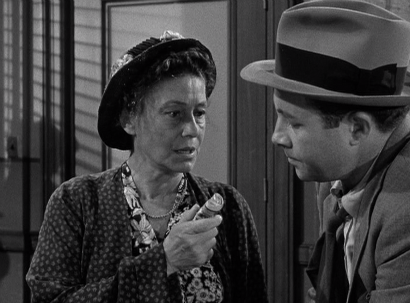
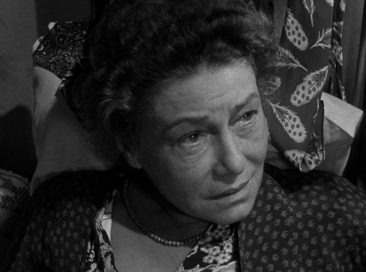
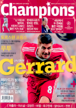
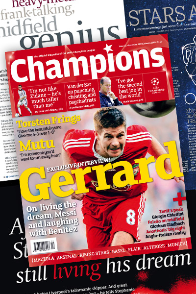
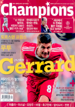
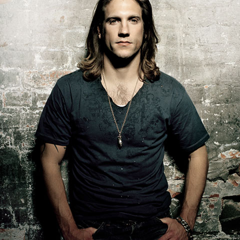
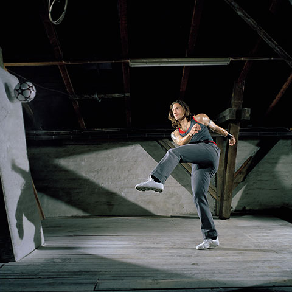
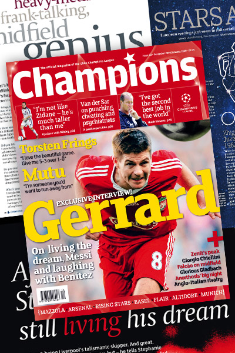

카테고리 : Pastime |
2009/01/10 [사우스 스트리트의 소매치기] (Pickup on South Street, 1953), 델마 리터
2008/12/21 Frohe Weihnachten!
2008/12/20 토어스텐 프링스 인터뷰, [Champions] 영문판/한국판, 2008.12~2009.1월호
2008/12/15 08/09 분데스리가 17라운드, 베르더 브레멘 : 볼프스부르크, 2008-12-13
2008/12/12 토어스텐 프링스 인터뷰, [챔피언스] 2008.12~2009.1월호
2008/12/21 Frohe Weihnachten!
2008/12/20 토어스텐 프링스 인터뷰, [Champions] 영문판/한국판, 2008.12~2009.1월호
2008/12/15 08/09 분데스리가 17라운드, 베르더 브레멘 : 볼프스부르크, 2008-12-13
2008/12/12 토어스텐 프링스 인터뷰, [챔피언스] 2008.12~2009.1월호

1월 6일 화요일에 서울시네마테크의 새뮤얼 풀러 회고전에서
[사우스 스트리트의 소매치기] (Pickup on South Street, 1953)를 보았는데,
영화 끝나고 나서 둘이서 마주 보며 "우와 재미있다!" 외쳤다.
평일 저녁 8시에 종각까지 가서 이 영화를 본 건
풀러보다도 리처드 위드마크 때문이었지만서도 ^^;;
영화도 무지 재미있고 위드마크도 역시나 우리를 실망시키지 않았지만,
이 영화에서 가장 인상적인 인물은
나오는 줄도 모르고 있었던 델마 리터가 연기하는 모 윌리엄스 아줌마였다.
델마 리터는 분명 다른 영화에서 한두번은 봤지만 이름만 알고 얼굴도 기억을 못 했던 배우인데
이 영화를 보니 잊을 수가 없다.
싸구려 넥타이를 파는 것을 본업(?)으로,
소매치기에 대한 정보를 파는 것을 부업(?)으로 하는 이 아주머니는
경찰서에 나타나는 첫 장면부터 활력과 재치, 투철한 직업 정신으로 우리를 휘어잡았다.

그리고, 돈만 밝히는 것 같은 이 아주머니야말로
아무리 두렵고 힘들더라도 인간에 대한 예의를 지키는,
진정 품위있는 장례식을 소망했던 사람이라는 것이 밝혀지고,
냉혹한 주인공 위드마크도 이 아주머니에게는 예우를 갖추지 않을 수 없는 것이다.
델마 리터가 죽음을 맞이하는 몇 분간은
이 영화에서 가장 아름답고 뭉클한 장면이었다.
예상치 못했던 감동적인 순간.

(포스터는 http://en.wikipedia.org/wiki/Pickup_on_South_Street 에서,
사진은 http://www.stinkylulu.com/2008/04/thelma-ritter-in-pickup-on-south-street.html 에서 가져왔다.)
# by 파이 | 2009/01/10 12:04 | Pastime
# by 파이 | 2008/12/21 00:09 | Pastime
우리의 기대를 저버리지 않고 어느 프링스 팬이 영문판을 스캔해서 올려주었다 ;-)
본문을 일일이 타자쳐서 텍스트로도 올려주었고.
역시 인터넷은 넓고 팬심 앞에 불가능은 없다.
http://taversham.livejournal.com/24404.html
나는 서점 가서 한국판 잡지를 디지털 카메라로 찍었는데
그대로는 글자 알아보기 힘들어서
서점에서 읽었던 기억을 더듬어가며
타자쳐서 텍스트로 만들었다.
그런데 영문판하고 비교해보니
번역을 대부분 매끄럽게 잘 한 것 같은데
구절이 빠지거나 번역이 이상한 부분이 몇 군데 있다.
'courted by Juventus'를 '유벤투스 이적 건으로 재판까지 섰다'고 번역한 건 좀 너무했다.
한국판 원문과 우리의 수정본, 그리고 영문판을 같이 올린다.
우리의 수정본은 { } 안에, 원문은 < > 안에 회색으로 표시했다.
frings.champions.200812.htm
본문을 일일이 타자쳐서 텍스트로도 올려주었고.
역시 인터넷은 넓고 팬심 앞에 불가능은 없다.
http://taversham.livejournal.com/24404.html
나는 서점 가서 한국판 잡지를 디지털 카메라로 찍었는데
그대로는 글자 알아보기 힘들어서
서점에서 읽었던 기억을 더듬어가며
타자쳐서 텍스트로 만들었다.
그런데 영문판하고 비교해보니
번역을 대부분 매끄럽게 잘 한 것 같은데
구절이 빠지거나 번역이 이상한 부분이 몇 군데 있다.
'courted by Juventus'를 '유벤투스 이적 건으로 재판까지 섰다'고 번역한 건 좀 너무했다.
한국판 원문과 우리의 수정본, 그리고 영문판을 같이 올린다.
우리의 수정본은 { } 안에, 원문은 < > 안에 회색으로 표시했다.
frings.champions.200812.htm
# by 파이 | 2008/12/20 20:58 | Pastime
2:1로 역전승!
결승골이 볼프스부르크의 자책골이었지만 상관없다.
상대편 자책골도 결국 우리가 열심히 공격하다 보니 얻게 되는 것.
근래 들어 최악의 성적으로 전반기를 마감하게 되었지만 그래도
전반기 마지막 경기, 홈 경기를 승리로, 그것도 역전승으로 마쳤다는 게 너무나 기쁘다.
3 시즌째 보고 있지만 브레멘이 역전승한 게 언제인지 기억나지 않을 정도라서;;
후반기에는 부디 더 좋은 모습 보여주길.
경기 끝나고 팬들에게 크리스마스 인사하는 베르더 브레멘 선수들.
우리 선수들 웃는 모습 보니 정말 좋다. 특히 프링스 웃는 모습.
동영상 원본은 여기.
결승골이 볼프스부르크의 자책골이었지만 상관없다.
상대편 자책골도 결국 우리가 열심히 공격하다 보니 얻게 되는 것.
근래 들어 최악의 성적으로 전반기를 마감하게 되었지만 그래도
전반기 마지막 경기, 홈 경기를 승리로, 그것도 역전승으로 마쳤다는 게 너무나 기쁘다.
3 시즌째 보고 있지만 브레멘이 역전승한 게 언제인지 기억나지 않을 정도라서;;
후반기에는 부디 더 좋은 모습 보여주길.
경기 끝나고 팬들에게 크리스마스 인사하는 베르더 브레멘 선수들.
우리 선수들 웃는 모습 보니 정말 좋다. 특히 프링스 웃는 모습.
동영상 원본은 여기.
# by 파이 | 2008/12/15 17:12 | Pastime
서점에 가서 구경하는 것을 즐겨하지만
축구 잡지는 웬만해서는 보지 않는다.
잘못되거나 이미 한참 지난 기사 투성이인데다가
(제일 어처구니 없었던 것 중의 하나는 CL 진출팀 소개하는 어느 잡지 부록에서
베르더 브레멘을 수비적인 팀이라고 했던 거)
관심있는 선수/팀에 대한 기사도 별로 없고
있어봐야 상처나 받는 경우가 너무 많다보니 그렇다.
그런데 오늘 서점에 갔다가 [챔피언스] 한국판 표지에 박혀 있는 다음 문귀가 눈에 들어와서 이건 당장 펴들고 기사 찾아 읽었다.

"토르스텐 프링스
1-0보다는 5-3을 사랑하는
브레멘의 미드필더"
올림픽 얘기가 나오고 시즌 초반 분위기인 걸로 봐서 인터뷰 시점은 2008년 8월 쯤 되는 듯.
사진은 어찌된 일인지 2006년 [Player] 잡지에 실렸던 사진을 그대로 쓰고 있다.
인터뷰 중에서 다른 무엇보다도 내 마음에 정통으로 박힌 대목은
"올 시즌 챔피언스리그 우승팀은 누가 될까요?"라는 질문에
프링스가 "미하엘 발락이 있는 첼시가 우승했으면 좋겠어요."라고 대답한 부분.
맨체스터 유나이티드가 우승할 것 같다는 말을 덧붙이기는 했지만;;
그래 제발 발-프 라인 변치 말아 달라구 ㅠㅠ
그 밖에 기억에 남은 대목은
선수 생활에서 은퇴하면 구단을 경영하는 것보다는 지도자가 되고 싶다는 얘기를 하면서
"가끔 감독님과 똑같은 생각을 하기도 하는데, 지도자 지망생 치고는 절대 나쁜 징조가 아니겠죠?"라고 한 대목.
몰랐는데 이거 [Champions] 영문판을 그대로 한글로 번역해서 나오는 잡지더라.

영문판으로 살까 싶어 검색을 해 봤는데 아니 왜 이렇게 비싼 거냐.
한국판은 정가가 6,500원인데 영문판은 무려 21,000원이다.
과월호되면 값이 내려갈 것 같긴 한데. 기다렸다 사야 하나;;
아니면 프링스 팬 커뮤니티에 누가 스캔해서 올려주기를 기대해 본다든가;;
축구 잡지는 웬만해서는 보지 않는다.
잘못되거나 이미 한참 지난 기사 투성이인데다가
(제일 어처구니 없었던 것 중의 하나는 CL 진출팀 소개하는 어느 잡지 부록에서
베르더 브레멘을 수비적인 팀이라고 했던 거)
관심있는 선수/팀에 대한 기사도 별로 없고
있어봐야 상처나 받는 경우가 너무 많다보니 그렇다.
그런데 오늘 서점에 갔다가 [챔피언스] 한국판 표지에 박혀 있는 다음 문귀가 눈에 들어와서 이건 당장 펴들고 기사 찾아 읽었다.

"토르스텐 프링스
1-0보다는 5-3을 사랑하는
브레멘의 미드필더"
올림픽 얘기가 나오고 시즌 초반 분위기인 걸로 봐서 인터뷰 시점은 2008년 8월 쯤 되는 듯.
사진은 어찌된 일인지 2006년 [Player] 잡지에 실렸던 사진을 그대로 쓰고 있다.


인터뷰 중에서 다른 무엇보다도 내 마음에 정통으로 박힌 대목은
"올 시즌 챔피언스리그 우승팀은 누가 될까요?"라는 질문에
프링스가 "미하엘 발락이 있는 첼시가 우승했으면 좋겠어요."라고 대답한 부분.
맨체스터 유나이티드가 우승할 것 같다는 말을 덧붙이기는 했지만;;
그래 제발 발-프 라인 변치 말아 달라구 ㅠㅠ
그 밖에 기억에 남은 대목은
선수 생활에서 은퇴하면 구단을 경영하는 것보다는 지도자가 되고 싶다는 얘기를 하면서
"가끔 감독님과 똑같은 생각을 하기도 하는데, 지도자 지망생 치고는 절대 나쁜 징조가 아니겠죠?"라고 한 대목.
몰랐는데 이거 [Champions] 영문판을 그대로 한글로 번역해서 나오는 잡지더라.

영문판으로 살까 싶어 검색을 해 봤는데 아니 왜 이렇게 비싼 거냐.
한국판은 정가가 6,500원인데 영문판은 무려 21,000원이다.
과월호되면 값이 내려갈 것 같긴 한데. 기다렸다 사야 하나;;
아니면 프링스 팬 커뮤니티에 누가 스캔해서 올려주기를 기대해 본다든가;;
# by 파이 | 2008/12/12 16:56 | Pastime
| < 이전페이지 | 다음페이지 > |